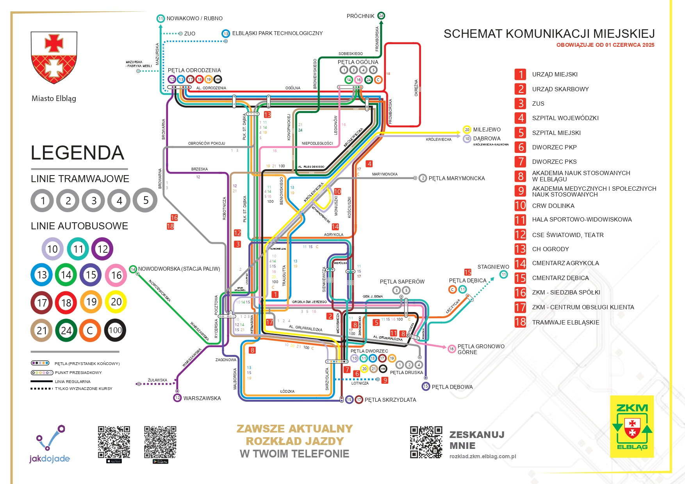
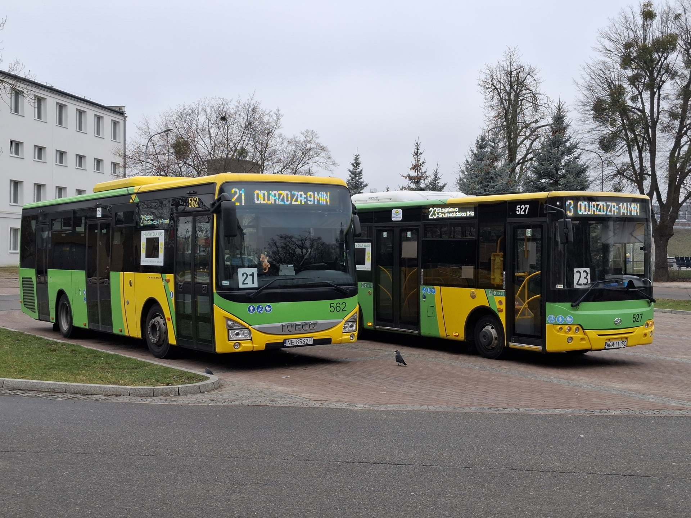

O Stronie
Hobbystyczna strona o komunikacji miejskiej w Elblągu. Informacje o taborze na stronie nie są oficjalnymi danymi spółki, dane wyłącznie do celów hobbystycznych.

Tablica najbliższych odjazdów - Dworzec Pętla
Nowości

Elbląg szuka nowego przewoźnika na 10 lat
transport-publiczny 23.12.2025

Tureckie tramwaje w Elblągu
transport-publiczny 26.09.2025

W przetargu na zakup 10 tramwajów oferte złożyli: Pesa Bydgoszcz (130mln) oraz Bozankaya (95mln)
transport-publiczny 04.02.2025